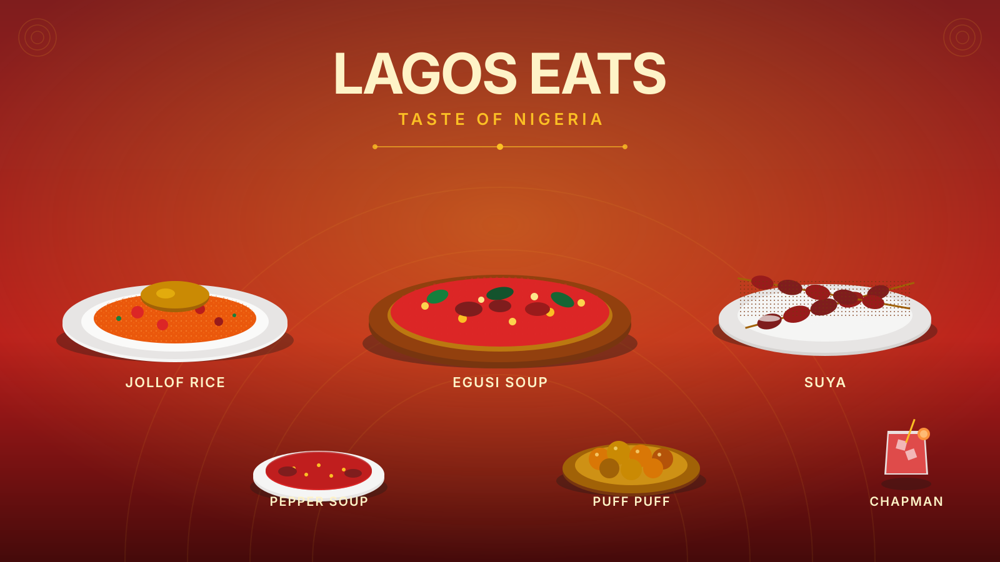

Featured Dishes
Loading featured dishes…
Why Lagos Eats?
Authentic Recipes
Every dish is documented with its regional origin and traditional preparation.
Locally Sourced
All restaurants featured are family-owned businesses in Lagos.
Community Driven
Built with input from local chefs and food lovers across Nigeria.